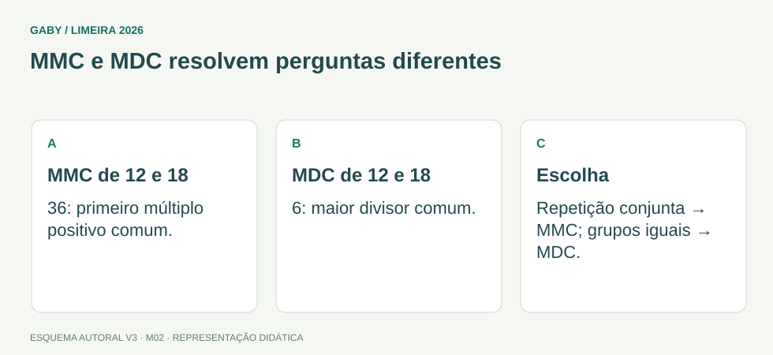

Como acompanhar esta aula
Comece pelos desenhos e pelos exemplos. Depois leia a fórmula e explique cada passo com suas palavras. Os esquemas visuais originais continuam disponíveis; as correções agora explicam as etapas.
Revisão didática para iniciantes. Questões autorais do projeto [Gaby], com duas correções editoriais de alternativas nos módulos M05 e M07. Não constitui nova auditoria do edital.
Objetivos do módulo
- Calcular MMC e MDC por fatoração.
- Escolher MMC para eventos cíclicos e denominadores.
- Escolher MDC para repartições máximas sem sobra.
MMC e MDC resolvem perguntas diferentes

Descrição em texto do esquema
- MMC de 12 e 18: 36: primeiro múltiplo positivo comum.
- MDC de 12 e 18: 6: maior divisor comum.
- Escolha: Repetição conjunta → MMC; grupos iguais → MDC.
Oficina visual · aplique o esquema
Há 24 lápis e 36 canetas. Qual o maior número de kits idênticos, sem sobras, usando todos os itens?
Atividade autoral complementar da V3. Registre sua resposta; a resolução está no arquivo de gabarito e revisão.
Mapa do conteúdo
1. Múltiplo é repetir; divisor é repartir
Múltiplos aparecem na tabuada. Divisores repartem uma quantidade sem sobra. O MMC procura o primeiro múltiplo positivo comum; o MDC, o maior divisor comum.
Entenda cada passo
- Múltiplos de 4 → 4, 8, 12, 16, 20, 24…
- Múltiplos de 6 → 6, 12, 18, 24…
- Primeiro positivo comum → MMC(4,6) = 12
- Divisores de 12 → 1, 2, 3, 4, 6, 12
2. Fatorar: desmontar em multiplicações
Primos têm exatamente dois divisores positivos: 1 e o próprio número. Fatorar é escrever um número como produto desses pequenos blocos.
Entenda cada passo
- 12 ÷ 2 = 6 → 6 ÷ 2 = 3 → 3 ÷ 3 = 1
- 12 = 2 × 2 × 3 = 2² × 3; 18 = 2 × 3²
- MMC: todos os primos com maior expoente → 2² × 3² = 36
- MDC: só comuns com menor expoente → 2 × 3 = 6
3. Escolher MMC ou MDC pela situação
Ciclos que começam juntos e se repetem pedem reencontro: MMC. Cortes iguais do maior tamanho, sem sobras, pedem MDC.
Entenda cada passo
- Evento a cada 6 min → 6, 12, 18, 24…
- Evento a cada 8 min → 8, 16, 24…; reencontro em 24 min
- Fitas de 24 e 36 cm → maior corte comum de 12 cm
- Confira os cortes → 24 ÷ 12 = 2 peças; 36 ÷ 12 = 3 peças
Fórmula em duas formas: fatoração prima
Em linha: 12 = 2 × 2 × 3
As duas escritas descrevem a mesma conta. Use o formato que ajudar a entender cada operação.
Sua vez: tente antes de abrir
Dois alarmes começam juntos e tocam a cada 4 e 10 minutos. Quando voltam a tocar juntos?
Conferir o raciocínio da atividade
- Múltiplos de 4: 4, 8, 12, 16, 20…
- Múltiplos de 10: 10, 20…
- MMC = 20 minutos após o início.
Refaça no papel. Se errou, descubra em qual passo antes de seguir para as dez questões.
Pegadinhas e erros frequentes
- Confundir “menor tempo comum” com MDC.
- No MMC, usar menor expoente em vez do maior.
- No MDC, incluir fator que não é comum.
Resumo depois de entender os exemplos
- MMC = menor múltiplo comum positivo; MDC = maior divisor comum
- expoente conta repetições: 2³ = 2 × 2 × 2
- reencontro = MMC dos intervalos; maior corte comum = MDC dos comprimentos
Exercícios do módulo
Tente primeiro sem consulta. Depois use “Ver resposta e resolução” abaixo da questão; clique novamente para recolher. O gabarito separado continua disponível.
Resolva sem consultar o arquivo de gabarito. As questões são autorais e construídas para treinar os conceitos do edital.
- 2
- 10
- 12
- 24
Fonte: referência de estudo.
Ver resposta e resolução — questão 1
Resposta: alternativa C
Leia o pedido e acompanhe o raciocínio:
- Múltiplos de 4: 4, 8, 12, 16…
- Múltiplos de 6: 6, 12, 18…
- Primeiro comum positivo: 12; 24 não é o menor.
Confira: refaça a operação final, verifique as unidades e compare com o que foi pedido.
- 6
- 12
- 3
- 72
Fonte: referência de estudo.
Ver resposta e resolução — questão 2
Resposta: alternativa A
Leia o pedido e acompanhe o raciocínio:
- Divisores de 18: 1, 2, 3, 6, 9, 18.
- Divisores de 24: 1, 2, 3, 4, 6, 8, 12, 24.
- O maior presente nas duas listas é 6.
Confira: refaça a operação final, verifique as unidades e compare com o que foi pedido.
- 25
- 30
- 150
- 5
Fonte: referência de estudo.
Ver resposta e resolução — questão 3
Resposta: alternativa B
Leia o pedido e acompanhe o raciocínio:
- Eventos começando juntos pedem o MMC dos intervalos.
- Dias: 10, 20, 30… e 15, 30…
- Primeiro reencontro positivo: 30 dias, não 10 + 15.
Confira: refaça a operação final, verifique as unidades e compare com o que foi pedido.
- média
- porcentagem
- MMC
- MDC
Fonte: referência de estudo.
Ver resposta e resolução — questão 4
Resposta: alternativa D
Leia o pedido e acompanhe o raciocínio:
- Pedaços iguais sem sobra precisam dividir ambas as medidas.
- Queremos o maior divisor, portanto MDC.
- MDC(24,36) = 12 cm: 2 peças e 3 peças.
Confira: refaça a operação final, verifique as unidades e compare com o que foi pedido.
- 2³
- 2²×3
- 2×6 apenas e isso impede fatoração
- 3²×2
Fonte: referência de estudo.
Ver resposta e resolução — questão 5
Resposta: alternativa B
Leia o pedido e acompanhe o raciocínio:
- 12 = 2 × 6 = 2 × 2 × 3.
- Dois fatores 2 são escritos 2².
- Logo 12 = 2² × 3. O 6 da primeira decomposição ainda pode ser fatorado.
Confira: refaça a operação final, verifique as unidades e compare com o que foi pedido.
- 4
- 24
- 96
- 20
Fonte: referência de estudo.
Ver resposta e resolução — questão 6
Resposta: alternativa B
Leia o pedido e acompanhe o raciocínio:
- 8 = 2³; 12 = 2² × 3.
- Pegue os maiores expoentes: 2³ × 3.
- Resultado 24; confira 24 ÷ 8 = 3 e 24 ÷ 12 = 2.
Confira: refaça a operação final, verifique as unidades e compare com o que foi pedido.
- 90
- 5
- 10
- 15
Fonte: referência de estudo.
Ver resposta e resolução — questão 7
Resposta: alternativa D
Leia o pedido e acompanhe o raciocínio:
- 30 = 2 × 3 × 5; 45 = 3² × 5.
- Pegue só comuns com menores expoentes: 3 × 5.
- MDC = 15, divisor dos dois números.
Confira: refaça a operação final, verifique as unidades e compare com o que foi pedido.
- 48
- 2
- 14
- 24
Fonte: referência de estudo.
Ver resposta e resolução — questão 8
Resposta: alternativa D
Leia o pedido e acompanhe o raciocínio:
- O denominador mínimo é MMC(6,8).
- 6 = 2 × 3; 8 = 2³; MMC = 2³ × 3 = 24.
- 1/6 = 4/24 e 1/8 = 3/24. 48 serve, mas não é mínimo.
Confira: refaça a operação final, verifique as unidades e compare com o que foi pedido.
- 2
- 0
- 1
- o produto
Fonte: referência de estudo.
Ver resposta e resolução — questão 9
Resposta: alternativa C
Leia o pedido e acompanhe o raciocínio:
- Coprimos têm somente 1 como divisor positivo comum.
- 8 e 9 são um exemplo; não precisam ser ambos primos.
- Pela definição, o MDC é 1.
Confira: refaça a operação final, verifique as unidades e compare com o que foi pedido.
- 12
- 35
- 1
- 70
Fonte: referência de estudo.
Ver resposta e resolução — questão 10
Resposta: alternativa B
Leia o pedido e acompanhe o raciocínio:
- 5 e 7 são primos distintos.
- Sem fatores comuns maiores que 1, o MMC é o produto.
- 5 × 7 = 35; 70 é comum, mas maior.
Confira: refaça a operação final, verifique as unidades e compare com o que foi pedido.
Quando terminar, abra Matemática 02 - MMC e MDC - Gabarito e Revisão.
Checklist de domínio
- ☐ Calcular MMC e MDC por fatoração.
- ☐ Escolher MMC para eventos cíclicos e denominadores.
- ☐ Escolher MDC para repartições máximas sem sobra.
Meta do módulo: 80% ou mais nas questões, sem depender de consulta.
Referências e conteúdos auxiliares
- IMPA/OBMEP — DivisibilidadeMúltiplos, divisores e propriedades de divisibilidade.
- OBMEP — Introdução à AritméticaAprofundamento em números, operações, divisibilidade e resolução de problemas.
Referências externas de apoio consultadas para a V3 em 27/09/2026. A origem das questões é o material autoral do projeto; estes links não indicam que uma instituição publicou ou validou os exercícios. As páginas externas precisam de internet. Em informática, confira a versão do programa; em legislação, observe o recorte e as regras de atualização do edital.